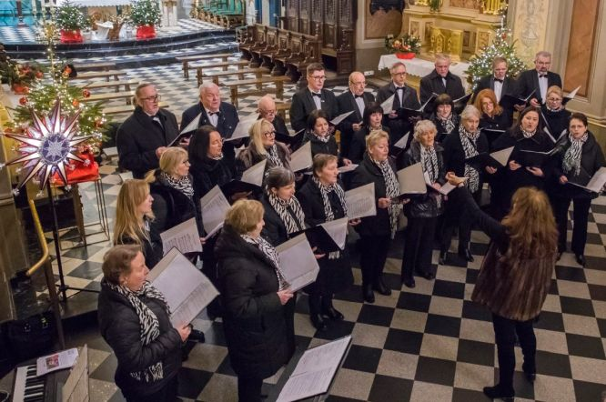
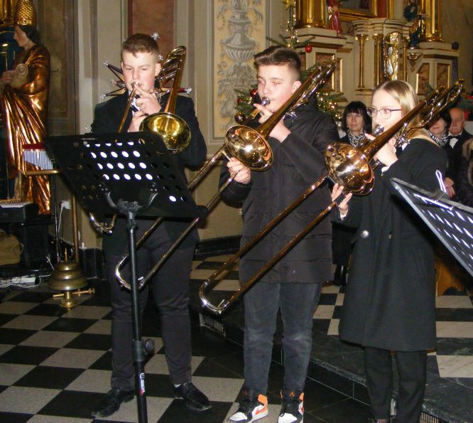
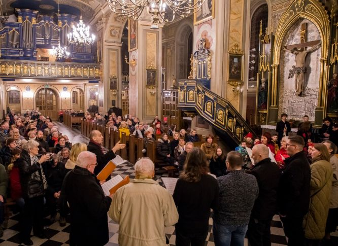

A tymczasem w Cameracie...
.
2023-01-07
XVI Wielicki Wieczór Kolęd W Kościele Św. Klemensa w Wieliczce miał miejsce XVI Wielicki Wieczór Kolęd. Pomysłodawcą wydarzenia jest Stowarzyszenie Muzyczne Chór Camerata,
który do udziału tradycyjnie zaprosił uczniów i nauczycieli Zespołu Szkół Muzycznych w Wieliczce.
kwintet Dęty: Jan Gałoński, Leon Gawlik – trąbki, Gabriela Kwiecińska, Maksymilian Półtorak, Igor Piątek - puzony, przygotowany przez pedagogów Pawła Gajewskigo i Arkadiusza Bałę, radosnym brzmieniem wprowadził wielicką publiczność w kolędowy nastrój.

Gościem specjalnym był Chór Parafii Ewangelicko-Augsburskiej Św. Marcina w Krakowie pod dyr. Łukasza Laxy’ego, zespół mający ponad stuletnią tradycję, reaktywowany w maju 2022 r.

Camerata pod dyr. Izabeli Szoty, przy akompaniamencie Agnieszki Korczyńskiej,
słowem i pieśnią opowiedziała o Chrystusowym Narodzeniu, cytując Ewangelię wg Św. Łukasza (interpretacja Marka Turchana) i bożonarodzeniowe teksty Jana Kochanowskiego, Jana Kasprowicza i Kajetana Kraszewskiego (interpretacja Izabeli Szoty) oraz wyśpiewując najpiękniejsze polskie kolędy i pastorałki.
Tekst Izabela Szota

© Stowarzyszenie Muzyczne Chór Camerata Wieliczka